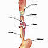

OncoGuía - Tipos de cáncer
-
 Adenoma de HipófisisGlándula situada en la silla turca
Adenoma de HipófisisGlándula situada en la silla turca -
 ColonLa última porción del aparato digestivo
ColonLa última porción del aparato digestivo -
 Cuello Uterino/Cérvixparte más inferior del aparato rep. femenino
Cuello Uterino/Cérvixparte más inferior del aparato rep. femenino -
 Endometrio/úteroórgano hueco, situado en la pelvis.
Endometrio/úteroórgano hueco, situado en la pelvis. -

Esófagotubo hueco que transporta los alimentos
-
 Estómagositúado en la parte alta del abdomen
Estómagositúado en la parte alta del abdomen -
 GliomasTumores cerebrales que proceden de las células gliales
GliomasTumores cerebrales que proceden de las células gliales -
 MamaGlándula destinada a la producción de leche
MamaGlándula destinada a la producción de leche -
 Médula Espinalel tejido nervioso más extenso del cuerpo
Médula Espinalel tejido nervioso más extenso del cuerpo -
 Meduloblastomatumores malignos en la fosa posterior del cerebro
Meduloblastomatumores malignos en la fosa posterior del cerebro -
 MelanomaCrecimiento de los melanocitos
MelanomaCrecimiento de los melanocitos -
 MeningiomasTumor cerebral usualmente benigno
MeningiomasTumor cerebral usualmente benigno -
 Metástasis CerebralesLesiones tumorales situadas en el cerebro y que proceden de otros tumores
Metástasis CerebralesLesiones tumorales situadas en el cerebro y que proceden de otros tumores -
 No MelanomaEl tumor más frecuente del ser humano
No MelanomaEl tumor más frecuente del ser humano -
 PáncreasGlándula que participa en el proceso de la digestión
PáncreasGlándula que participa en el proceso de la digestión -
 PróstataGlándula sexual exclusiva de los varones
PróstataGlándula sexual exclusiva de los varones -
 PulmónDos pulmones (derecho e izquierdo) localizados en el tórax.
PulmónDos pulmones (derecho e izquierdo) localizados en el tórax. -
 RectoLa última porción del aparato digestivo
RectoLa última porción del aparato digestivo -
 Tumores InfantilesCada año se diagnostican 1.200 casos nuevos de tumores infantiles
Tumores InfantilesCada año se diagnostican 1.200 casos nuevos de tumores infantiles -
 Vejigaórgano situado en la parte baja de la pelvis
Vejigaórgano situado en la parte baja de la pelvis
Cáncer de pulmón
Introducción
El ser humano está constituido por dos pulmones (derecho e izquierdo) localizados en el tórax, protegido por las costillas, separados por el mediastino donde está ubicado el corazón. El pulmón derecho está formado por 3 lóbulos (superior, medio e inferior) y, de dimensión, mayor que el izquierdo, que tiene 2 lóbulos (superior e inferior), por la localización desplazada del corazón hacia este lado. Los pulmones están recubiertos por una doble membrana lubricada llamada pleura. La función principal del sistema pulmonar es la de extraer el oxígeno que procede del aire que respiramos (inspiración) y eliminar el dióxido de carbono que nuestro cuerpo genera (espiración).
El cáncer de pulmón es el tumor maligno visceral más frecuente, responsable de más de un tercio de las muertes por cáncer y es la causa más común de muerte relacionada con cáncer tanto en mujeres como en hombres. La incidencia en hombres está disminuyendo y, por el contrario, en mujeres aumentando. Entre las causas que pueden producir cáncer de pulmón destacan:
- Tabaco: El consumo de cigarrillos causa más del 80% de los casos de cáncer de pulmón. El riesgo en fumadores es 30 veces mayor que en los no fumadores. Fumar cigarros en puro o en pipa dobla el riesgo en relación a los no fumadores.
- Asbesto: Su exposición, además de relacionarse con el cáncer de pulmón (sobre todo en fumadores), puede producir un tipo de tumor maligno que afecta a la pleura (Mesotelioma maligno).
- Exposición a radiación: Puede incrementar el riesgo de cáncer de pulmón tanto en fumadores como en no fumadores. El radón se ha asociado con hasta un 6% de casos de cáncer.
- El arsénico, níquel, compuestos con cromo, el éter clorometilo y los contaminantes atmosféricos son otras sustancias que se relacionan con el aumento de probabilidades de padecer cáncer de pulmón.
- El cáncer de pulmón, en sí mismo, está asociado a un incremento del riesgo de tener un segundo cáncer de pulmón.
- Las cicatrices pulmonares y la Enfermedad Pulmonar Obstructiva Crónica (EPOC)
El cáncer de pulmón se divide en 2 tipos histológicos:
- Carcinoma microcítico: El carcinoma de células pequeñas o microcítico constituye el 15% de los cánceres pulmonares. Se localizan más frecuentemente en la región central o hiliar. Suelen estar asociados a un rápido deterioro clínico y con alto índice de recaídas, a pesar de las buenas respuestas clínicas y radiológicas iniciales que se consiguen.
- Carcinoma no microcítico de pulmón: Lo componen las variantes histológicas escamoso o epidermoide (30%), adenocarcinoma y de células grandes (ambos constituyen el 60%). El adenocarcinoma es el subtipo más frecuente en pacientes no fumadores y en mujeres jóvenes.
Prevención
No fumar se considera la mejor forma de prevención en el cáncer de pulmón. Al dejar de fumar el riesgo disminuye progresivamente pero nunca se llega a igualar al de los no fumadores. Evitar (o tomar las medidas adecuadas) la exposición a agentes carcinógenos puede ser otra manera de prevención
Diagnóstico Precoz
Estudios recientes sugieren que la realización de tomografía axial computerizada (TAC) puede detectar precozmente el cáncer de pulmón en personas de alto riesgo (por ejemplo en grandes fumadores). No obstante, se requiere más investigación en este tema para poder evaluar el coste-beneficio de la realización de TAC para la detección precoz del cáncer de pulmón.
Síntomas y diagnóstico clínico
Exploración física y valoración de síntomas: Hábito tabáquico, tos de reciente aparición o variable, esputos con sangre, falta de apetito con pérdida de peso, disnea (falta de aire), dolor torácico…
Pruebas complementarias:
- Analítica general (hemograma, bioquímica, coagulación)
-
Pruebas de imagen:
- Radiografía de tórax: Suele ser la primera prueba a realizar para poder confirmar la existencia de un nódulo pulmonar
- Tomografía Axial Computerizada (TAC o scanner) de tórax y abdomen nos da una información más detallada de la lesión pulmonar y de si existe extensión a otros órganos (ganglios linfáticos, hígado, hueso,…).
- Tomografía con emisión de positrones (PET): Es una tecnología basada en la captación diferencial de glucosa marcada por los tejidos neoplásicos en comparación con los sanos. Complementa el estudio realizado por el TAC y nos informa del grado de actividad tumoral.
-
Obtención de células o tejido pulmonar:
- Citología de esputo. Consiste en el estudio celular de las secreciones bronquiales. Dada su escasa rentabilidad ha sido sustituida por otras, aunque se sigue realizando casi de forma rutinaria.
- Fibrobroncoscopia: Prueba que nos permite una visualización directa de la vía respiratoria y de más del 50% de los tumores pulmonares. Nos permite además poder coger muestras que nos ayuden al diagnóstico histológico de la lesión.
- Biopsia de la lesión de forma directa a través de la pared torácica hasta llegar a la lesión (transcutánea).